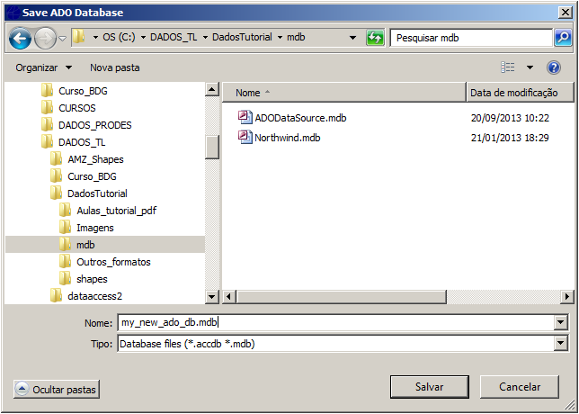

To create a new Microsoft
Access (*.mdb
or *.accdb) database as a data source inform where it
will be created, its name and password if necessary (New Database Name, Password).

Note: To connect with this database as a datasource a new connection
must be defined through the
DataSource Selector.